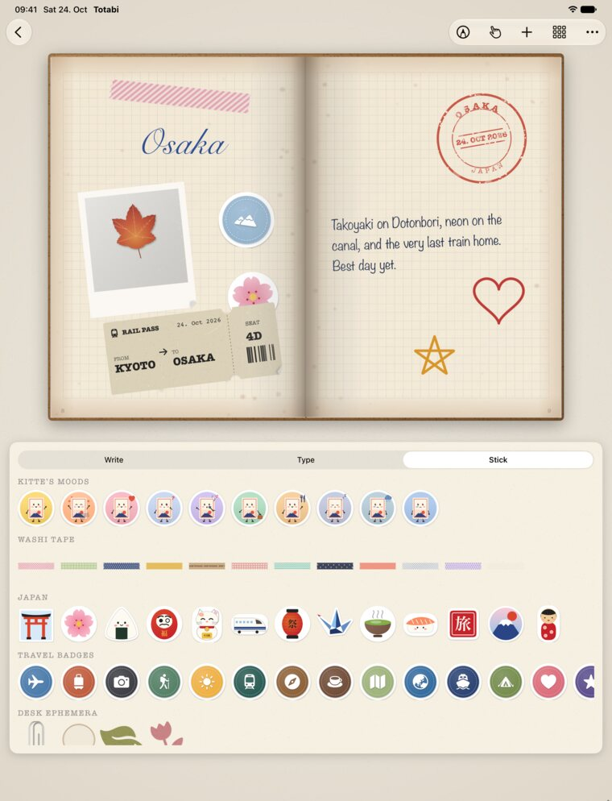
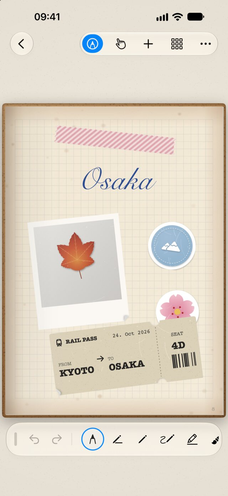
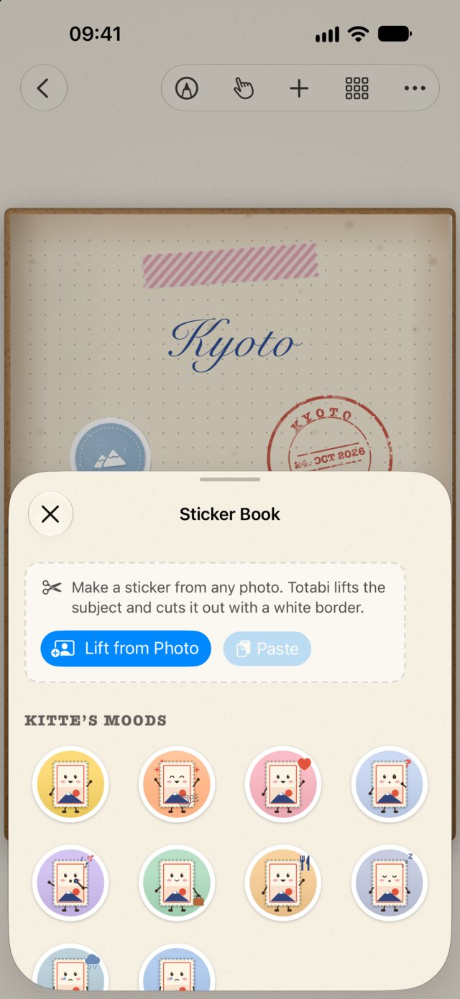
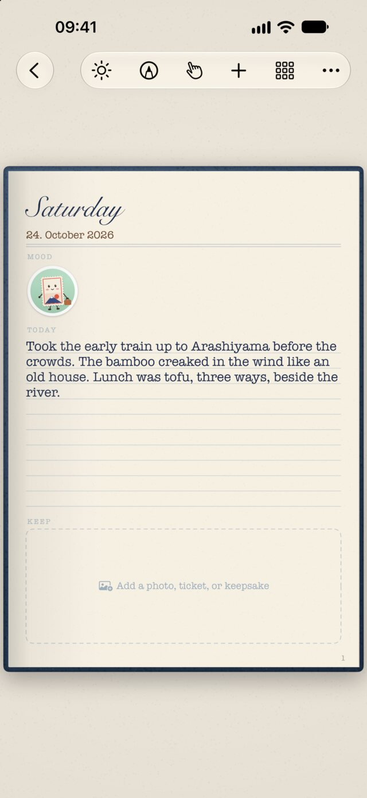

Your travels, bound like a real notebook.
A travel journal that opens like a book on iPhone Duo. Write by hand, collect Japan's eki stamps, stick on washi tape and tickets, and keep a page for every day. Also on iPhone and iPad.
Unfold it, and it opens like a book.
On iPhone Duo, your journal becomes a two-page spread along the fold. Half-fold it like a laptop and the page stands up while the lower half becomes your desk: write by hand, type like on a typewriter, or drag stickers up onto the page.

Everything sits on the page like the real thing.
Pages turn and curl, paper ages gently over the years, and every ticket, stamp, and sticker has its own weight.

Write like on paper
Apple Pencil feels at home here: ink flows, strokes sit in the paper, and your finger is free to turn pages.
- Fountain pen, calligraphy, gel pen, fineliner, pencil, highlighter
- Type in beautiful fonts, or in a font made from your own handwriting
- Dotted, lined, grid, kraft, and black refills

Collect your trip
Bring home the things that make a journey: the stamp from a tiny station, the ticket, the leaf from the temple path.
- Photograph eki stamps and Totabi lifts the ink cleanly off the paper
- Turn any photo into a sticker with a white border
- Washi tape, tickets, postmarks, pressed leaves, scanned receipts

A page for every day
Keep a diary next to your travel journals. Each day gets its own page, with gentle prompts and a reminder if you like.
- Tell Kitte, Totabi's postage-stamp friend, how the day felt
- Lock a diary with Face ID
- Write from your lock screen with one tap
Little things that make it yours.
Trip map
A map of your route, drawn from the places you stamped.
Back pocket
Tuck keepsakes away and place them on a page later.
Pressed leaves
Photograph a leaf or flower and press it onto the page.
Your handwriting font
Write a few letters, and type in your own hand.
Paper that ages
Pages slowly warm and yellow over the months, like a real notebook.
Shiny finishes
Glossy, glitter, and holographic stickers that catch the light as you tilt.
Voice notes
Tuck a sound, a story, or a song behind anything on a page.
Full-screen pages
Let the page fill the screen, edge to edge.
Free to start. Plus for making more.
Everything you make stays yours, with or without Plus. Choose monthly, yearly, or buy it once for life.
Free
All the essentials, for good.
- Three journals, diaries, or stamp books
- Apple Pencil, fonts, stickers, tape, and stamps
- Eki stamps, trip map, pocket, and pressed leaves
- Kitte's moods, diary lock, and the iPhone Duo desk
Totabi Plus
For journaling every trip.
- Unlimited journals
- iCloud Sync across your devices
- Shiny sticker finishes
- Your own diary page design
- Voice notes
Private by design
No account, no ads, no tracking. Your journals stay on your device, and in your private iCloud if you choose.